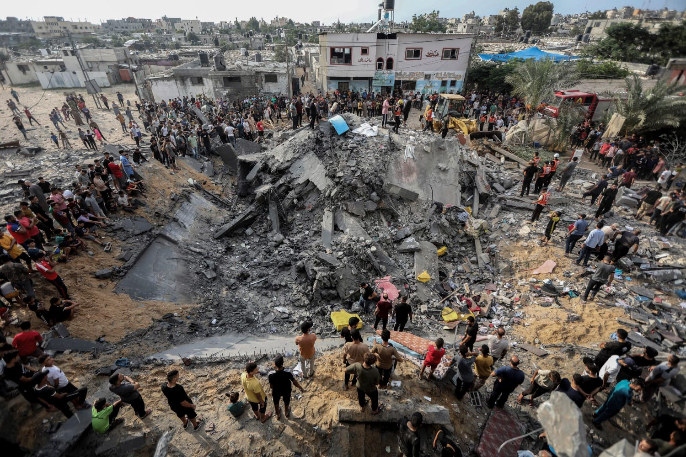
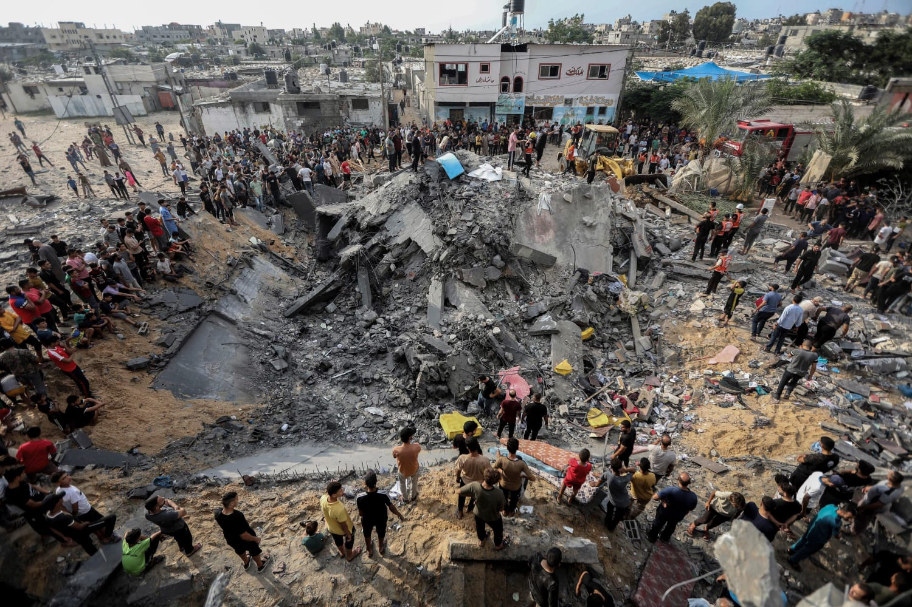

Historical Timeline
- 1948: The Nakba (Catastrophe) leads to the displacement of over 700,000 Palestinians.
- 1967: Israel occupies the West Bank, East Jerusalem, and Gaza.
- 2007: Gaza is placed under a land, air, and sea blockade.
- 2014–2022: Repeated military operations cause large-scale civilian casualties.
- October 2023: A massive escalation results in unprecedented destruction, civilian deaths, and mass displacement.
- Late 2023–2024: Temporary ceasefires announced, repeatedly violated amid continued attacks.
- Ongoing: Violence, humanitarian collapse, and ceasefire violations persist.
 


October 2023 and the Ongoing Reality
October 2023 marked one of the deadliest and most destructive periods in recent Palestinian history. Entire neighborhoods in Gaza were reduced to rubble, hospitals were overwhelmed, and hundreds of thousands of civilians were forcibly displaced within days. The scale of destruction drew global attention, yet for Palestinians, it was an intensification of a reality they had endured for years.
Although ceasefires were announced, they proved fragile and repeatedly violated. Airstrikes, ground operations, and blockades continued, undermining claims of de-escalation. Each “pause” in violence became temporary relief rather than a path to safety, leaving civilians trapped between uncertainty and fear.
Today, Gaza remains on the brink of humanitarian collapse. Access to clean water, food, electricity, and medical care is critically limited. Families live in overcrowded shelters, mourning the loss of loved ones while fearing the next violation of a ceasefire that was meant to protect them.
Human Rights Violations
International human rights organizations and UN bodies have documented serious violations of international humanitarian law in Palestine. These include collective punishment, disproportionate use of force, destruction of civilian infrastructure, arbitrary detention, and forced displacement.
Ceasefires that are repeatedly violated erode trust and deepen suffering. When accountability is absent and civilian protection is treated as optional, violence becomes normalized. Human rights are not negotiable, and their continued violation represents a failure not only of policy, but of moral responsibility.
A Survivor’s Voices
“When they announced a ceasefire, my children finally slept,” said a displaced father from Gaza. “But the bombs returned. Now they ask me why ceasefire means nothing. I have no answer for them.”
Such testimonies reveal the psychological toll of repeated violence and broken promises. Survival in Palestine is not only about staying alive—it is about enduring uncertainty, loss, and the constant fear that safety will again be taken away.
How You Can Help
Awareness without action allows injustice to continue. Supporting credible humanitarian organizations, demanding accountability, and sharing verified information are essential steps toward protecting civilian lives.
You can help by contributing to trusted NGOs providing emergency medical aid, food relief, and shelter. Learn how to take meaningful action through our Action Page.